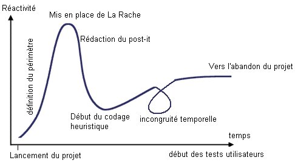
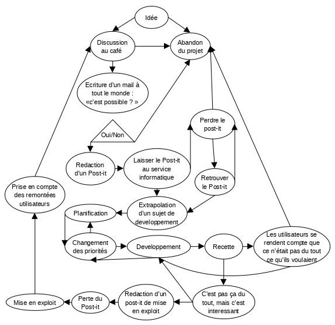

Rapid
Application
Conception and
Heuristic
Extreme-programming
La Rache s’appuie sur deux concepts aussi important l’un que l’autre.
D’une part la «Rapid Application Conception » correspond conceptuellement à une accélération importante dans la phase de conception de l'application par rapport aux méthodes classiques. Pour bien débuter avec La RACHE il faut soigner la phase d'étude et la rédaction du cahier des charges. Il faut ici produire un travail de synthèse important en résumant le cahier de charges en un post-it de 8 mots maximum. Puis la mission est d’extrapoler de ce post-it un sujet de développement vaseux, mais pas trop. A partir de là, en règle générale, la multiplication du nombre de mot sur le post-it par un chiffre tiré au sort entre 20 et 200 donne la durée du projet en jours/homme. On prendra soin de ne rien planifier dans cette phase.
D'autre part « L’extrême programming heuristique » est un concept assez prometteur. En effet l’heuristique est une technique consistant à apprendre petit à petit, en tenant compte de ce que l'on a fait précédemment pour tendre vers la solution d'un problème. Opposé à l’algorithmique l'heuristique ne garantit pas du tout qu'on arrive à une solution quelconque en un temps fini. Ceci sous entend d’une part une démarche pédagogique globale d’apprentissage et de capitalisation des acquis, mais aussi que les échéances annoncées le sont dans une pure otique de déconnade symbolique. Et c’est précisément le plus ‘produit’ de la méthode RACHE.
Cycle typique d'utilisation de La RACHE

Exemple de process conforme à La RACHE :
